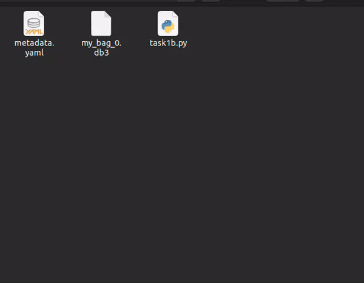

Task 1B - Submission
Submission instructions for task 1B:
- NOTE: All your tasks will be checked using a plagiarism software. If any submitted file is found to be plagiarised, e-Yantra reserves the right to disqualify the team.
-
Upgrade your
eyantra-autoevalpackage by running the command given belowpip3 install -U eyantra-autoeval -
First launch the robot in gazebo as instructed before
ros2 launch ur_description ur5_gazebo_launch.pyandros2 launch ur5_moveit spawn_ur5_launch_moveit.launch.pykeep it running (Replace the package name ofur5_moveitif you have named it differently) . -
Then open a new terminal and execute the auto eval script
eyantra-autoeval evaluate --year 2023 --theme CL --task 1B. -
Wait for
DATA COLLECTION STARTEDINFO to be shown on the terminal. -
Now, run your Python script to manipulate arm, and once the task is completed go to the autoeval terminal and use
Ctrl + ckey once which will generate amy_bag/my_bag_0.db3bag file in the same directory (inside a folder namedmy_bag).
NOTE: You can verify the bag file duration by using the command
ros2 bag info my_bag_0.db3by navigating to the directory containing.db3bag file. This is not the run time of your task but the bag file recording time.
- Now add your python script and rename it as
task1b.pyto the same directory and create a.zipfile by selecting all three files i.e. Python, yaml and bag file . Take a look at the below.GIFto understand it better. (Note: Do not compress the whole folder)

- Once the zip is created, rename it as
<CL#team_id_1B>(For example, if your team id is 1679, rename file asCL#1679_1B.zip) and submit on eYRC Portal - Task 1 by selecting option 1B.
Grading
This task will be graded out of 35
Maximum Marks-Marks: 35.00
Failed Task-Marks: 0.00
Formula
Task_1B_Marks = ([180 - T] / 24) + ([CPP1 + CPP2] * 10) + ([CDP1 + CDP2] * 5)
T: Time for execution of manipulation -
- Maximum Time: 180 sec (or 3 mins)
- T = End time - Start time
- Start time: First movement of arm from its initial position after the start of eyantra-autoeval.
- End time: Time of pressing
Ctrl + c(to be pressed only once) on the terminal which is running autoeval. - Conditions:
- if T < 60: T = 60
- if T > 180: T = 180
CPP: Correct Pick Pose -
- The pick pose correspondes to the two given poses which is in front of boxes in the task instruction.
- The value for CPP1 and CPP2 will be in binary format and corresponds to front and right boxes position respectively (as given in the instructions page).
- Allowed deviation from actual given pose: 0.02 meter (error range)
- For example: if the arm reaches CPP1 within error range but does not attempt CPP2 or has not reached within the range, the the value of CPP1 and CPP2 will be 1 and 0 respectively.
CDP: Correct Drop Pose -
- The drop pose correspondes to the drop pose given in the task instruction.
- CDP1: The drop pose reached after executing CPP1.
- CDP2: The drop pose reached after executing CPP2.
- The value of CDP is in binary format, similar to CPP.
- Allowed deviation from actual given pose: 0.1 meter (error range)